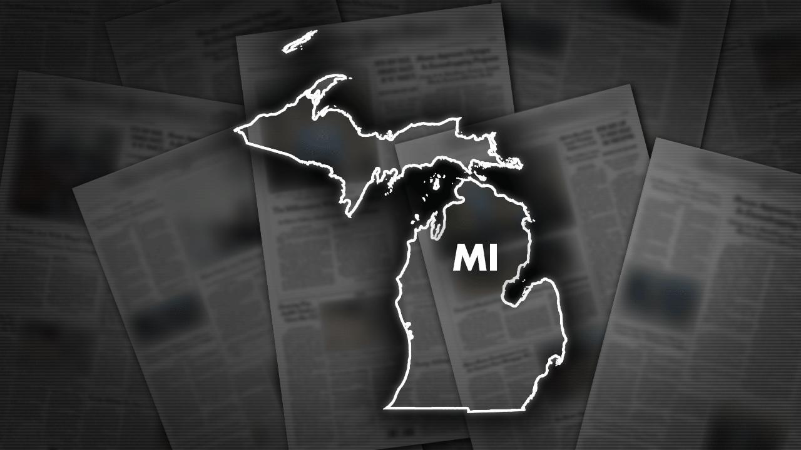

Northern Michigan paper mill fire spurs road closures, warnings to avoid areaA fire at a northern Michigan paper mill Wednesday has closed several roads and prompted state police to warn people to stay away from the area. Plumes of thick and heavy black and gray smoke billowed from the Tissue Depot property along M-27 in downtown Cheboygan, about 290 miles northwest of Detroit. The nearby Cheboygan Lock and Dam also was temporarily closed. Staff with Michigan's Department of Environment, Great Lakes, and Energy were sent to Cheboygan Wednesday afternoon "to help assess the situation," spokesman Jeff Johnston told The Associated Press in an email. Authorities said they believe the fire was in a warehouse on the property. "The smoke billowed for hours," said Trisha Leask, an employee at a convenience store a few blocks from the fire. "It looked like black storm clouds." Leask said she noticed the smoke Wednesday morning. It's not the first time the property has caught fire, she added. Kaiden Miller said he could see the flames from the nearby eatery where he works as a cook. "There was a bunch of smoke going up," he said, noting that by 2:30 p.m. Wednesday the amount of smoke had subsided as firefighters worked to extinguish the blaze. Miller also said the property has had a history of fires. "Lots, at least once a year," he said. "That place is always on fire." Formerly known as Great Lakes Tissue Co., the mill once employed about 300 workers. |
 |